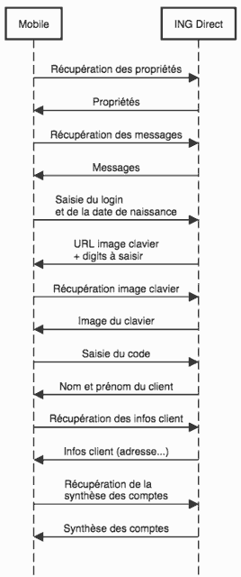

Depuis quelques années, je note régulièrement sur une feuille Excel le solde de chacun de mes comptes bancaires. Je ne récupère pas tout l'historique des opérations, juste le montant disponible ce jour-là. Cela me permet de suivre l'évolution de nos économies. Cette tâche peut prendre du temps car nous avons des comptes dans différentes banques (comptes courants, plan d'épargne entreprise, PEA...). Je le fais donc tous les 6 mois environ.
Il faut :
Je n'affectionne pas vraiment les tâches manuelles, en particulier si elles se répètent dans le temps (vous le verrez dans les différents articles de ce blog)...
Automatisons ça !
L'objectif est donc de récupérer le solde de mes comptes par un script, pour faciliter la mise à jour de cette feuille Excel (voire de la mettre à jour automatiquement). Cela permettra aussi de le faire plus régulièrement.
Plusieurs services existent sur le web pour suivre l'état de ses comptes, avec des notifications, des graphes... On peut penser à Linxo notamment. Malheureusement, je me retrouve toujours avec quelques comptes qui ne peuvent être synchronisés. La banque n'étant pas encore reconnue par Linxo (cf. liste des banques reconnues). L'envoi des codes de connexion de ses comptes bancaires à des sites tiers peut également être un frein pour certains.
Le scraping, c'est l'art de récupérer des informations automatiquement sur des pages web. Par exemple, vous réalisez un script qui permet d'extraire la météo dans votre ville, en récupérant les infos dans le code HTML du site meteofrance.fr.
Pour ce projet, je commence par la récupération des informations de mes comptes chez ING Direct. Pour cela, deux options s'offrent à moi :
Je choisis la deuxième option car l'utilisation des interfaces de programmation (API) des applications mobiles est plus performant que l'extraction d'informations dans des pages HTML. Le volume de données échangées est en effet beaucoup plus faible que celui contenu dans une page HTML. Cependant, certaines de ces API ne sont pas documentées. C'est le cas ici pour ING. Il faut alors faire de la rétro-ingénierie (ou reverse engineering) pour découvrir leur fonctionnement. Ça tombe bien, c'est un exercice qui me passionne!
Pour connaitre l'API de consultation des comptes d'ING Direct, je dois visualiser les échanges entre mon smartphone et les serveurs d'ING. Il existe un outil parfait pour cette tâche : Charles. Il est disponible sur Windows/Mac/Linux, avec une version d'essai gratuite parfaitement fonctionnelle.
Charles permet de créer un proxy sur votre PC, sur lequel votre smartphone va se connecter pour accéder à internet. Ainsi, tout ce qu'il échangera avec le web sera visualisable sur le PC.
Voici les étapes déroulées pour découvrir l'API non officielle d'ING Direct :
Voici le diagramme de séquences qui illustre la succession des échanges entre mon mobile et les serveurs ING Direct lors de la consultation de mes comptes.

A partir de ces découvertes, je peux reproduire le comportement de l'application mobile avec du code Python. Je crée alors un package dédié (ingdirect, disponible sur pip), ainsi qu'une commande ing pour interroger très simplement ses comptes bancaires en ligne de commande.
Toutes les infos sur les paramètres d'entrée et sortie et l'utilisation de la commande sont sur la page Github du package ingdirect-python.
A titre indicatif, voici l'aide de la commande ing :
Usage: ing [OPTIONS]
Récupère la synthèse des comptes bancaires ING Direct
Options:
-n, --numero-client TEXT votre numéro client ING Direct
-d, --date-naissance TEXT votre date de naissance au format JJMMAAAA (ex:
30121982)
-c, --code TEXT votre mot de passe ING Direct (ex : 123456)
--version Show the version and exit.
--help Show this message and exit.
On peut alors obtenir ce type de résultat, directement dans le terminal (en 3 petites secondes) :
Nom du compte;Solde
Compte Courant XXXX 1234;1500,5€
Livret A XXXX 3456;10000,0€
MISSION ACCOMPLIE!
N'hésitez pas à ajouter une étoile au projet Github si cela vous a plu (★ → ingdirect-python)